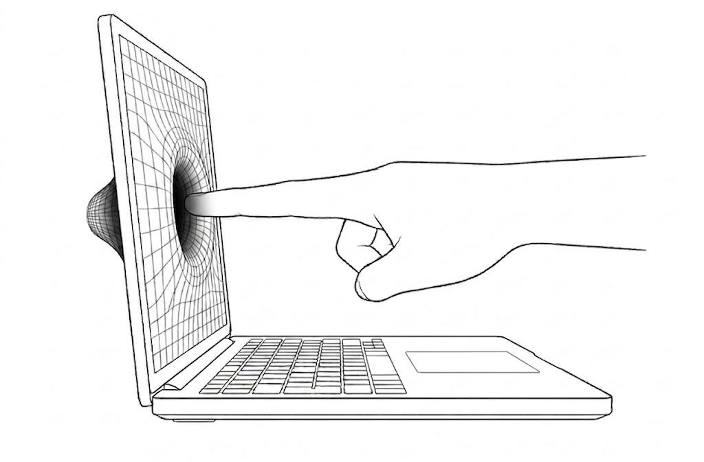
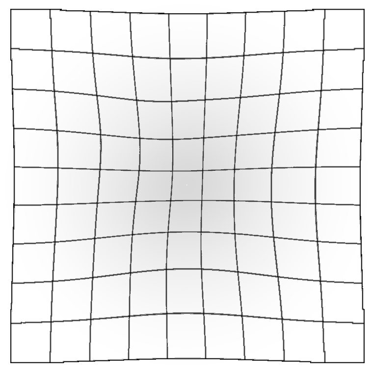

トラックパッド押下時に，描画画像へ幾何学的歪みと光学的減光を付与することで，画面が凹むような視覚表現を提示する．入力時の物理的な押し込みと画面上の視覚的な凹みを同期させることで，画面自体を押し込んでいるかのような擬似触覚を生起させる．
描画レイヤーへのポストプロセスとして実装されているため，WebページのDOM構造や動作に干渉しない．Chrome拡張機能として実装されており，任意のWebページへ適用可能である．

クリックすると画面が凹む
トラックパッド押下時に，描画画像へ幾何学的歪みと光学的減光を付与することで，画面が凹むような視覚表現を提示する．入力時の物理的な押し込みと画面上の視覚的な凹みを同期させることで，画面自体を押し込んでいるかのような擬似触覚を生起させる．
描画レイヤーへのポストプロセスとして実装されているため，WebページのDOM構造や動作に干渉しない．Chrome拡張機能として実装されており，任意のWebページへ適用可能である．
